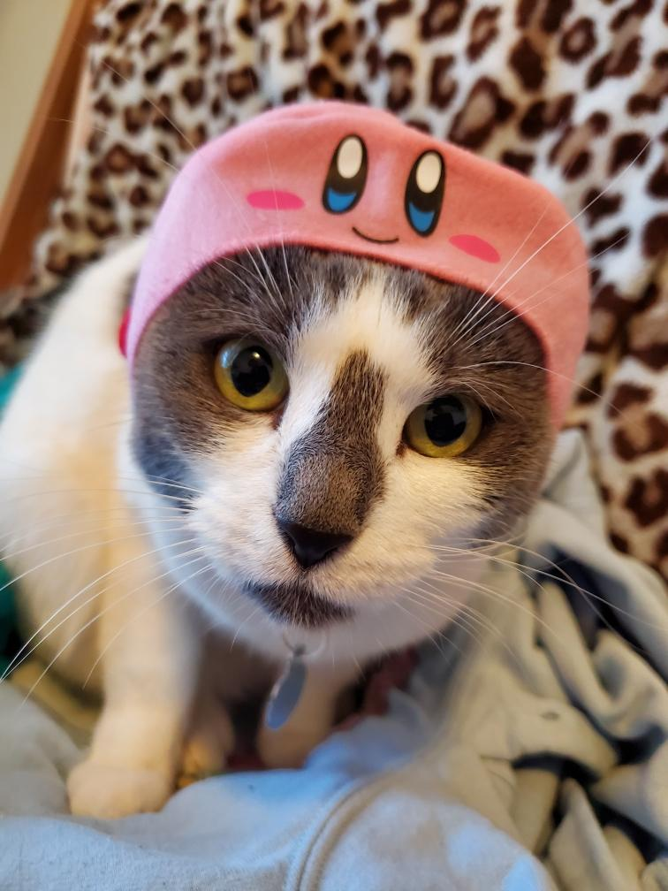
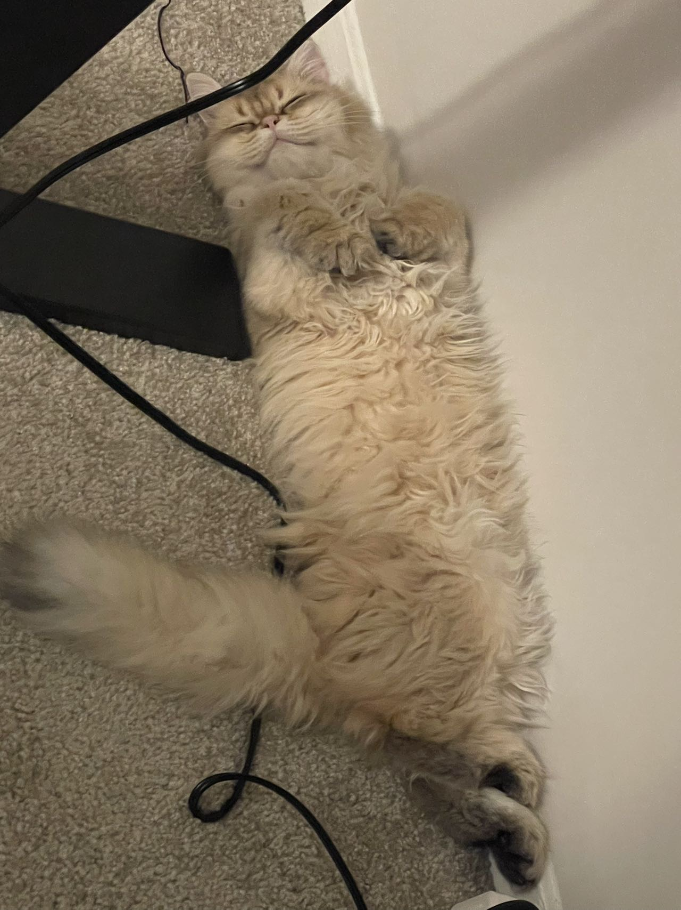
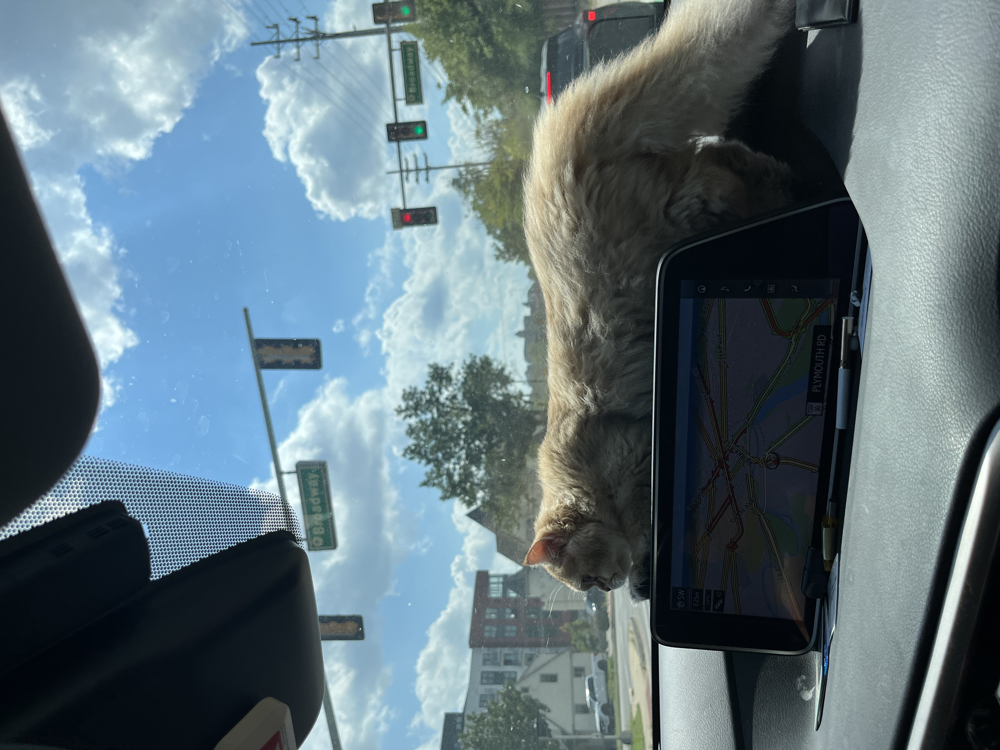
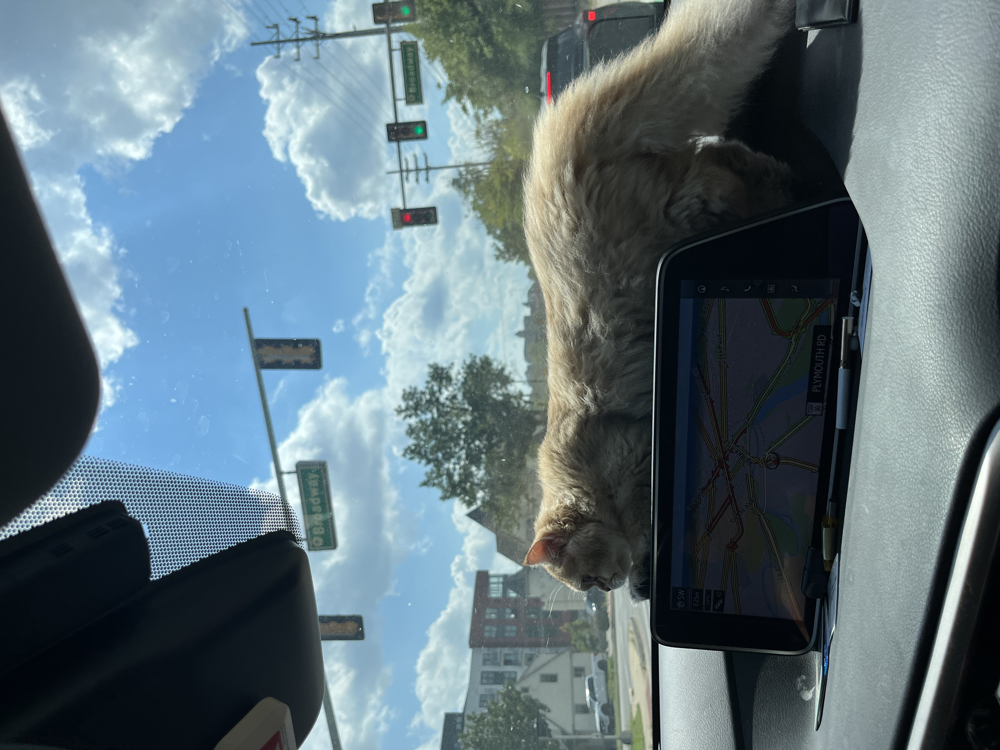
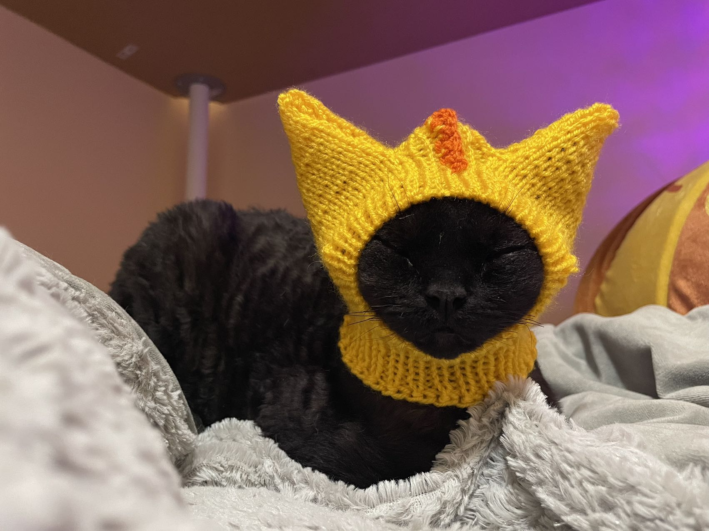
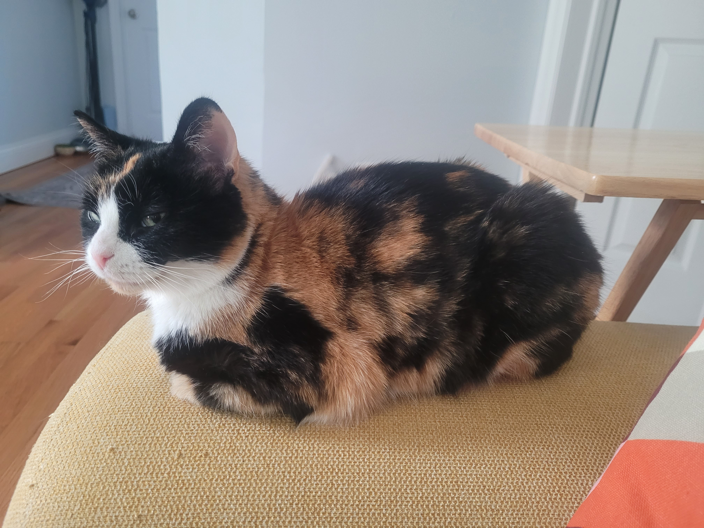
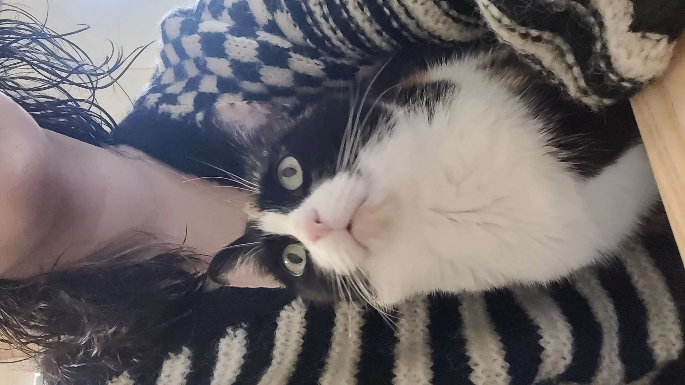
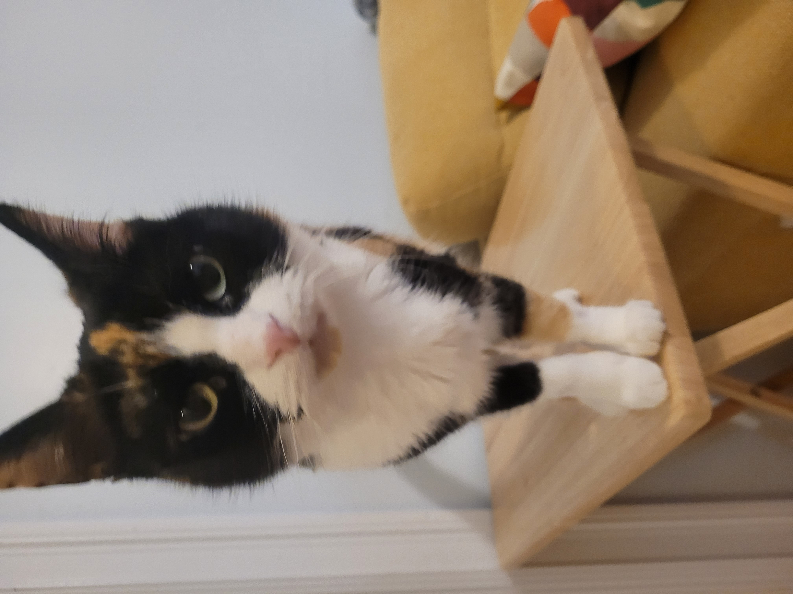
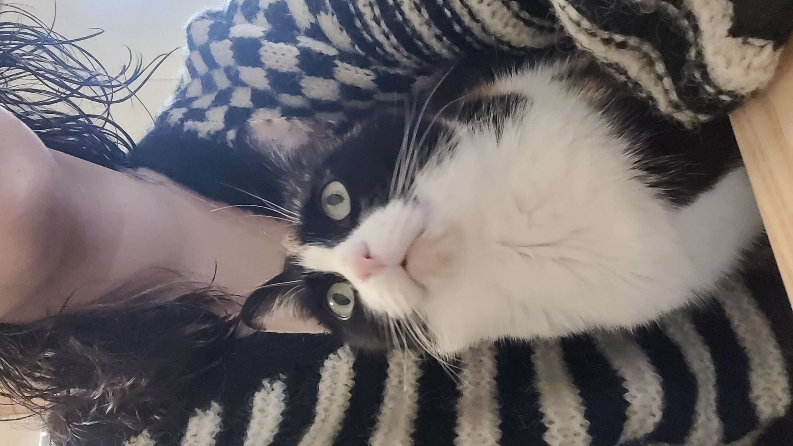
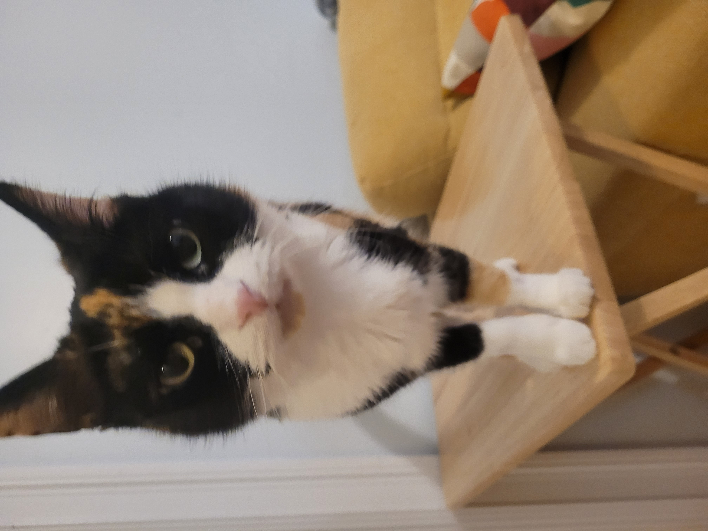

Pets
Mochi
Mochi is a 3 year old Grey and White cat. She has anxiety and likes to hide and take naps
Photo Gallery
Bacon Q Dog

Bacon Q. Dog is a 9yr old labradoodle. He prefers to spend his days lounging among the three different beds/couches that his family has gifted him. He enjoys a walk or two around the neighborhood, as long as he can pretend that he doesn't see any of the other animals to avoid the embarrassment of not wanting to admit he has no wolf-like skills in chasing them.
At night just as the rest of the family is ready to relax, Bacon suddenly wants to release all of his energy. He will place his toys on a mini couch and frantically drag the couch around, giving his toys "a ride." There is also a lot of rolling. Lots and lots of rolling.
Photo Gallery


Nuo
Nuo is a 10 year old cat. She is a very sweet cat who loves to cuddle and be pet. She is very shy and will hide when people come over. She loves to play with her toys and chase her tail. She is very curious and loves to explore. She is very smart and knows how to open doors. She is very vocal and will meow when she wants attention. She loves to eat and will eat anything she can get her paws on. She is very independent and likes to do her own thing. She is very friendly and loves to meet new people.
Photo Gallery
 

Santa
Santa is a 3 year old cat. He is a very sweet cat who loves to cuddle and be pet. He is very shy and will hide when people come over. He loves to play with his toys and chase his tail. He is very curious and loves to explore. He is very smart and knows how to open doors. He is very vocal and will meow when he wants attention. He loves to eat and will eat anything he can get his paws on. He is very independent and likes to do his own thing. He is very friendly and loves to meet new people.
Photo Gallery

Bawaajigan
Bawaajigan is a calico cat who is 8 years old. She loves to take naps and play with her toys. She is passionate about food and is known to bust into chip bags and lick the chips.
Photo Gallery
 


